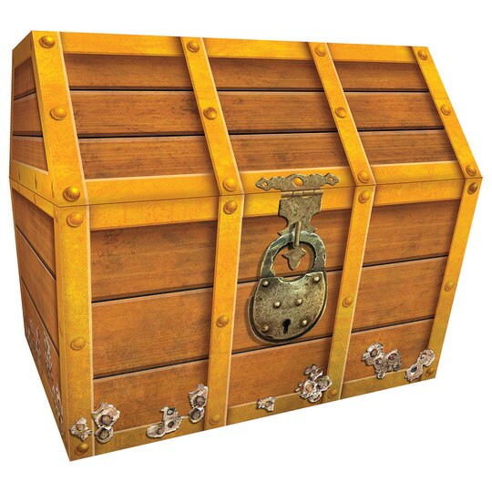

Just as in the Goblet of Fire Harry Potter had to complete a challenge to rescue his friends, you have to complete a series of challenges to rescue your birthday present.
For each challenge below you will find a key that will be used to open a lock on the chest of destiny.
Once you've opened all the locks you can rescue your present.
Since you are turning 8 years old, there are 8 challenges that await you.
You can mostly complete the tasks in any order.
